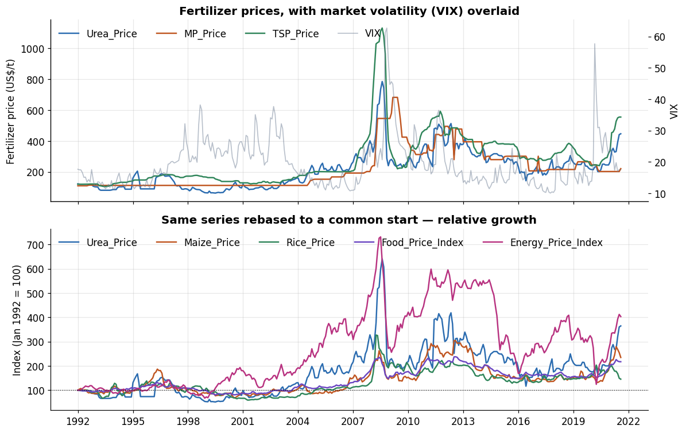
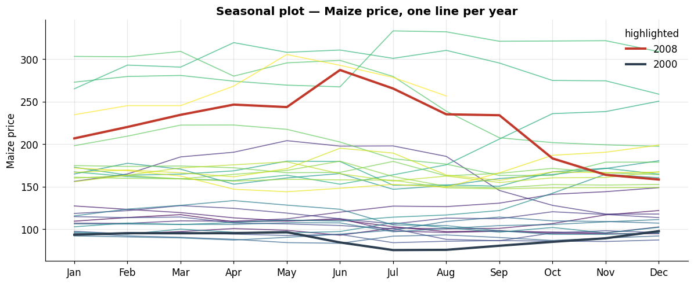
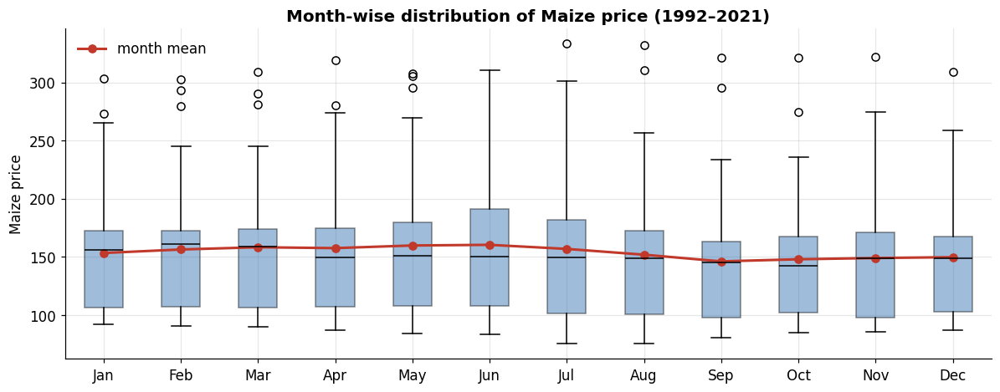
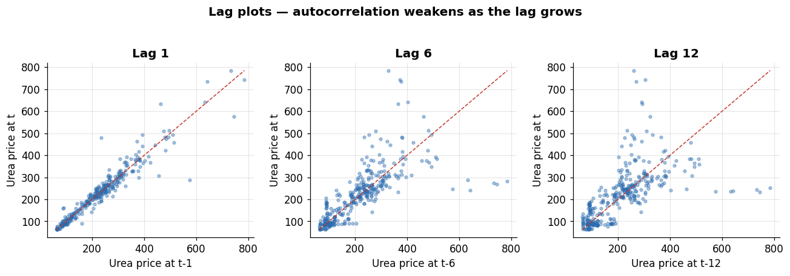
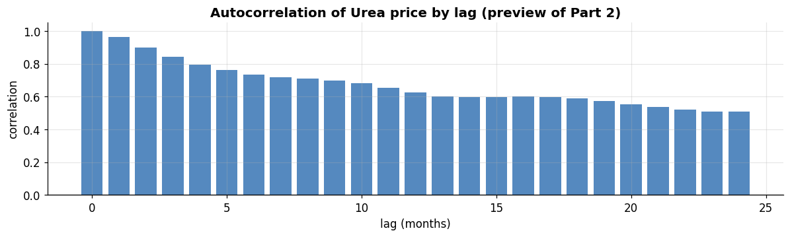
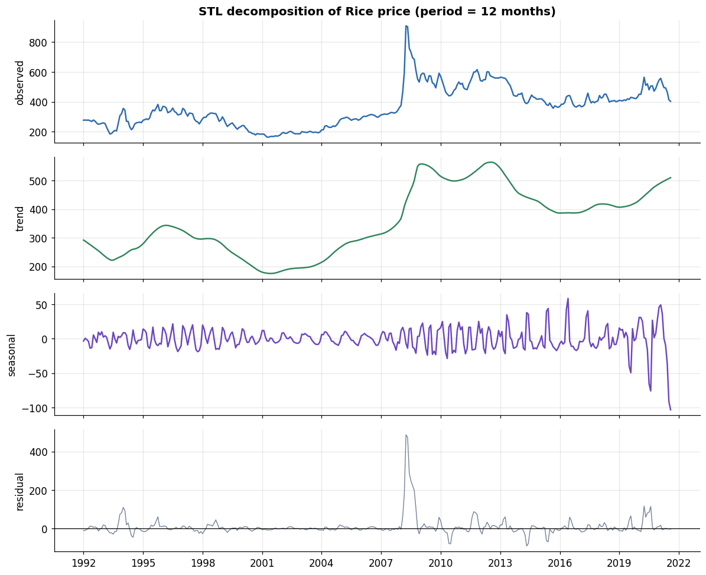

Series:Time Series Analysis in Python — from Statistical Modeling to Machine Learning
This is the first notebook in a progressive series that moves from classical statistics through modern deep learning. Part 1 is the groundwork: it will not forecast anything yet. Instead it builds the two skills every later part depends on — thinking about a series in terms of its components, and handling time-indexed data correctly in pandas. Get these wrong and every model downstream inherits the mistake.
What you will learn
What a time series is, and the four components we decompose one into
How to turn raw rows into a proper DatetimeIndex with an explicit frequency
Selecting and slicing data by time
Resampling — changing the frequency of a series up or down
Rolling / expanding windows and lag / shift operations
Detecting and repairing missing timestamps and gaps
The core diagnostic plots for time series
Making the components concrete with an STL decomposition
The dataset
Throughout this series we use a single real monthly dataset, monthly_price.csv: 356 months of global commodity prices, from January 1992 to August 2021. It mixes three families of series, which lets us contrast different temporal behaviours:
Group
Columns
Character
Fertilizers
Urea_Price, MP_Price, TSP_Price
Strong trends, supply-driven spikes
Crops
Maize_Price, Rice_Price, Wheat_Price
Seasonality + trend
Market indices
Food_Price_Index, Energy_Price_Index, VIX_Index
Macro cycles; VIX is volatility, not a price
The dataset sits in the health / environment / agriculture / finance space and carries genuine macro events — the 2008 food-price crisis, the 2008 financial crisis (visible in the VIX), and the 2020 COVID shock — so the plots tell a real story rather than a synthetic one.
0. Setup
We keep Part 1 deliberately lean on libraries — pandas, numpy, and matplotlib do almost all the work, with a single statsmodels call at the end for decomposition. Everything here is standard scientific-Python.
import numpy as npimport pandas as pdimport matplotlib.pyplot as pltimport matplotlib.dates as mdates# Consistent, readable plot styling for the whole notebookplt.rcParams.update({"figure.figsize": (11, 4.2),"figure.dpi": 110,"axes.grid": True,"grid.alpha": 0.3,"axes.spines.top": False,"axes.spines.right": False,"axes.titlesize": 13,"axes.titleweight": "bold","font.size": 11,"lines.linewidth": 1.6,})# A small reusable colour palettePALETTE = ["#2b6cb0", "#c05621", "#2f855a", "#6b46c1", "#b83280", "#718096"]print("pandas :", pd.__version__)print("numpy :", np.__version__)
pandas : 3.0.2
numpy : 2.4.4
1. What is a time series?
A time series is a sequence of observations recorded in time order, usually at a fixed spacing (here, one observation per month). That ordering is the whole point: unlike a normal tabular dataset, the rows are not exchangeable. You cannot shuffle them, and when you validate a model you cannot let information from the future leak into the past. Almost every rule that makes time series special follows from that one fact.
Univariate vs. multivariate. A univariate series tracks one quantity over time (e.g. Urea_Price alone). A multivariate series tracks several aligned on the same time index (all nine columns together). Our file is multivariate, which lets us study each series on its own and the relationships between them.
The four components. The classical way to reason about a series is to imagine it as a sum (or product) of parts:
Trend (T) — the long-run direction (fertilizer prices drifting up over 30 years).
Seasonality (S) — a pattern that repeats over a fixed, known period (a 12-month crop cycle).
Cyclicity (C) — longer swings with no fixed period, tied to the economy (boom/bust). Often folded into the trend in practice.
Residual / noise (R) — what is left after removing the above; the irregular part.
We write either an additive model, \(y_t = T_t + S_t + R_t\), when the size of the seasonal swing is roughly constant, or a multiplicative model, \(y_t = T_t \times S_t \times R_t\), when the swing grows with the level of the series. We will separate these components explicitly in Section 8.
2. Loading the data and building a proper time index
Read the raw file first and look at it before doing anything clever.
raw = pd.read_csv("monthly_price.csv")print("shape:", raw.shape)raw.head()
shape: (356, 13)
ID
YEAR
MONTH
TIME
Urea_Price
MP_Price
TSP_Price
Maize_Price
Rice_Price
Wheat_Price
Food_Price_Index
Energy_Price_Index
VIX_Index
0
1
1992
Jan
Jan-92
122.5
110.0
120.0
109.3
277.3
170.0
55.7
23.7
17.7
1
2
1992
Feb
Feb-92
120.6
110.0
120.0
113.6
278.3
177.1
55.5
23.8
17.5
2
3
1992
Mar
Mar-92
120.0
110.0
120.0
117.0
277.2
169.4
55.6
23.8
17.5
3
4
1992
Apr
Apr-92
120.0
110.0
120.2
108.5
278.0
159.9
54.1
25.2
16.6
4
5
1992
May
May-92
120.0
110.0
120.5
109.6
274.0
149.7
54.2
26.3
15.1
raw.dtypes
ID int64
YEAR int64
MONTH str
TIME str
Urea_Price float64
MP_Price float64
TSP_Price float64
Maize_Price float64
Rice_Price float64
Wheat_Price float64
Food_Price_Index float64
Energy_Price_Index float64
VIX_Index float64
dtype: object
Two things stand out. First, there are no missing values (we will confirm this), which is unusual and convenient — so later we will deliberately punch holes in a copy to practise repairing them. Second, there is already a TIME column, but look closely at it:
print("early TIME values:", raw["TIME"].head(3).tolist())print("late TIME values:", raw["TIME"].tail(3).tolist())
early TIME values: ['Jan-92', 'Feb-92', 'Mar-92']
late TIME values: ['21-Jun', '21-Jul', '21-Aug']
The format is inconsistent — Jan-92 early on, 21-Apr later. Parsing that string directly is a trap. This is a common real-world lesson: don’t trust a pre-baked date string; rebuild the index from reliable parts. The YEAR (integer) and MONTH (three-letter abbreviation) columns are clean, so we construct the timestamp from those instead.
# Build a first-of-month timestamp from YEAR + MONTH, which are reliable.dates = pd.to_datetime( raw["YEAR"].astype(str) +"-"+ raw["MONTH"],format="%Y-%b", # e.g. "1992-Jan")df = raw.drop(columns=["ID", "YEAR", "MONTH", "TIME"]).copy()df.index = datesdf.index.name ="date"# Tell pandas the spacing is 'month start' (MS). This is the crucial step.df = df.asfreq("MS")df.head()
Urea_Price
MP_Price
TSP_Price
Maize_Price
Rice_Price
Wheat_Price
Food_Price_Index
Energy_Price_Index
VIX_Index
date
1992-01-01
122.5
110.0
120.0
109.3
277.3
170.0
55.7
23.7
17.7
1992-02-01
120.6
110.0
120.0
113.6
278.3
177.1
55.5
23.8
17.5
1992-03-01
120.0
110.0
120.0
117.0
277.2
169.4
55.6
23.8
17.5
1992-04-01
120.0
110.0
120.2
108.5
278.0
159.9
54.1
25.2
16.6
1992-05-01
120.0
110.0
120.5
109.6
274.0
149.7
54.2
26.3
15.1
Why asfreq("MS") matters
Setting an explicit frequency on the index is not cosmetic. It records the contract that observations are spaced one month apart, starting on the first of each month. With a frequency set, pandas and statsmodels can reason about the calendar: they know how many periods a year holds, can generate future dates, and will surface a gap as a missing timestamp rather than silently skipping it.
index dtype : datetime64[us]
frequency : <MonthBegin>
n periods : 356
span : 1992-01-01 -> 2021-08-01
is monotonic : True
any missing? : False
A few useful properties are now available directly off the DatetimeIndex. These .dt-style accessors (here used on the index itself) are the raw material for the calendar features we will engineer in later parts.
Our index is time-zone naive, and for monthly economic data that is exactly right — a monthly price has no meaningful hour, let alone a UTC offset. Time zones matter when you work with sub-daily data collected across regions (sensor feeds, web logs, market ticks). The mechanics, for reference:
# Localize to a zone, then convert — shown for reference only.sample = df.index[:3]localized = sample.tz_localize("UTC")converted = localized.tz_convert("America/New_York")for a, b inzip(localized, converted):print(a, " -> ", b)print("\nOur working index stays tz-naive (correct for monthly data):", df.index.tz)
1992-01-01 00:00:00+00:00 -> 1991-12-31 19:00:00-05:00
1992-02-01 00:00:00+00:00 -> 1992-01-31 19:00:00-05:00
1992-03-01 00:00:00+00:00 -> 1992-02-29 19:00:00-05:00
Our working index stays tz-naive (correct for monthly data): None
3. Selecting and slicing by time
Once the index is a DatetimeIndex, time-based selection becomes very natural. Partial-string indexing lets you name a year or a month and pandas expands it to the full range.
# One full yeardf.loc["2008"].head()
Urea_Price
MP_Price
TSP_Price
Maize_Price
Rice_Price
Wheat_Price
Food_Price_Index
Energy_Price_Index
VIX_Index
date
2008-01-01
376.6
230.6
539.2
206.7
375.6
336.1
106.2
118.0
25.8
2008-02-01
328.1
240.0
729.4
220.1
464.8
393.9
116.1
123.6
25.5
2008-03-01
371.0
240.0
875.6
234.4
594.0
403.8
123.9
133.3
27.1
2008-04-01
462.5
393.0
1029.0
246.4
907.0
326.9
127.6
142.5
21.6
2008-05-01
633.8
546.0
1037.0
243.5
901.8
288.4
127.3
159.4
18.3
# A closed date range (both endpoints included), a subset of columnsdf.loc["2007-06":"2008-12", ["Food_Price_Index", "Energy_Price_Index"]].head()
Food_Price_Index
Energy_Price_Index
date
2007-06-01
81.5
90.0
2007-07-01
83.4
94.8
2007-08-01
84.7
91.2
2007-09-01
89.4
98.3
2007-10-01
92.8
105.4
# A single monthdf.loc["2020-04", ["Maize_Price", "Rice_Price", "Wheat_Price"]]
Maize_Price
Rice_Price
Wheat_Price
date
2020-04-01
146.9
564.0
179.8
Because the index is sorted and typed, these lookups are fast and read almost like English. Contrast that with filtering a plain string column, which forces a full scan and breaks the moment the string format drifts — exactly the problem we sidestepped in Section 2.
4. Resampling — changing the frequency
Resampling converts a series from one frequency to another. It comes in two directions:
Downsampling — to a coarser frequency (monthly → quarterly → yearly). You are combining many periods into one, so you must aggregate (mean, sum, last, …).
Upsampling — to a finer frequency (monthly → weekly). You are creating new timestamps that have no data yet, so you must fill or interpolate them.
The API is df.resample(rule).aggregation(). The rule uses offset aliases: MS month-start, QE quarter-end, YE year-end, W weekly, D daily.
# Downsample to yearly averages (a smoother view of the trend)yearly = df.resample("YE").mean()yearly[["Urea_Price", "Food_Price_Index", "VIX_Index"]].head()
Urea_Price
Food_Price_Index
VIX_Index
date
1992-12-31
117.608333
53.875
15.458333
1993-12-31
85.541667
54.125
12.691667
1994-12-31
93.883333
58.150
13.950000
1995-12-31
126.866667
63.000
12.391667
1996-12-31
153.691667
67.975
16.466667
The aggregation you choose encodes a decision about meaning. For a price, the yearly mean or last value is sensible. For a flow such as rainfall or sales you would sum. For volatility like the VIX you might take the max to capture the worst of the year. Resampling is never just mechanical.
# Different aggregations answer different questionsagg = df["VIX_Index"].resample("YE").agg(["mean", "max", "min", "std"]).round(1)agg.head()
mean
max
min
std
date
1992-12-31
15.5
17.7
12.2
1.9
1993-12-31
12.7
14.1
11.4
0.9
1994-12-31
14.0
16.5
11.3
1.7
1995-12-31
12.4
14.4
11.5
0.7
1996-12-31
16.5
19.3
13.5
1.5
# Upsample monthly -> weekly. New weekly slots start empty and must be filled.wk = df["Food_Price_Index"].resample("W").asfreq() # no fill: creates NaNsprint("weekly slots:", len(wk), " of which missing:", int(wk.isna().sum()))wk_ffill = df["Food_Price_Index"].resample("W").ffill() # carry last valuewk_interp = df["Food_Price_Index"].resample("W").interpolate("linear") # straight linecompare = pd.DataFrame({"as_is": wk, "ffill": wk_ffill, "interp": wk_interp})compare.head(8)
weekly slots: 1544 of which missing: 1493
as_is
ffill
interp
date
1992-01-05
NaN
55.7
55.66
1992-01-12
NaN
55.7
55.62
1992-01-19
NaN
55.7
55.58
1992-01-26
NaN
55.7
55.54
1992-02-02
NaN
55.5
55.52
1992-02-09
NaN
55.5
55.54
1992-02-16
NaN
55.5
55.56
1992-02-23
NaN
55.5
55.58
asfreq() vs resample(): asfreq() just changes the labels and shows you the holes; resample() is the general engine that also aggregates or fills. Use asfreq() when you only want to relabel or expose gaps, resample() for everything else.
5. Rolling windows, expanding windows, and lags
These three operations appear constantly — first as diagnostics, and later (Part 7) as engineered features for machine-learning models.
Rolling window — a fixed-width window that slides along the series; e.g. a 12-month rolling mean is a smoothed trend.
Expanding window — an anchored window that grows to include everything up to the current point; e.g. the cumulative-to-date average.
Shift / lag — move the series forward or backward in time; the basis of growth rates and of the lag features every autoregressive model relies on.
s = df["Urea_Price"]feat = pd.DataFrame({"value": s,"roll_mean_12": s.rolling(window=12).mean(), # 12-month smoothed trend"roll_std_12": s.rolling(window=12).std(), # rolling volatility"expanding_mean": s.expanding().mean(), # cumulative average to date})feat.loc["2007":"2008"].head(8).round(1)
value
roll_mean_12
roll_std_12
expanding_mean
date
2007-01-01
265.0
227.4
20.0
126.7
2007-02-01
299.4
234.5
28.3
127.6
2007-03-01
318.1
240.7
37.2
128.7
2007-04-01
291.0
244.4
40.0
129.6
2007-05-01
293.1
249.7
42.0
130.4
2007-06-01
291.9
256.5
41.6
131.3
2007-07-01
269.5
261.8
38.4
132.0
2007-08-01
260.6
266.0
34.9
132.7
Notice the first 11 rolling values would be NaN — a window of 12 cannot be computed until 12 observations exist. That edge effect is expected; the choice is whether to accept the shorter usable series or to min_periods your way around it.
Shifting moves data relative to its timestamps. shift(1) pushes values one month into the future (yesterday’s value sitting on today’s row) — precisely what you need to compute change, and precisely the mechanism behind a lag feature.
Differencing (.diff()) — subtracting the previous value — is worth flagging now because it returns in Part 2 as the standard tool for removing a trend and making a series stationary. Here it simply gives month-over-month change; there it becomes a modelling step.
6. Missing timestamps, gaps, and interpolation
Real series arrive with holes: a sensor drops out, a month goes unreported, a source changes format. There are two very different kinds of “missing”:
A missing value — the timestamp exists in the index but the number is NaN.
A missing timestamp — an entire period is absent from the index, so nothing even signals that it is gone.
The second is the dangerous one, because naive code steps right over it. A frequency-aware index is your defence. Our data is complete, so to practise we first create a damaged copy.
# Make a damaged copy: drop three specific months entirely (missing timestamps)# and blank out a couple of values (missing values).damaged = df["Food_Price_Index"].copy()drop_months = pd.to_datetime(["2010-03-01", "2010-04-01", "2015-08-01"])damaged = damaged.drop(index=drop_months) # remove timestampsdamaged.loc["2012-07-01"] = np.nan # blank a valuedamaged.loc["2018-11-01"] = np.nanprint("original length:", len(df), " damaged length:", len(damaged))print("damaged freq :", damaged.index.freq, " <- lost, because rows were dropped")
original length: 356 damaged length: 353
damaged freq : None <- lost, because rows were dropped
Dropping rows silently destroyed the frequency. The fix is to reindex onto the complete expected calendar, which re-inserts the absent months as explicit NaNs — turning invisible missing timestamps into visible missing values we can then treat.
full_index = pd.date_range(damaged.index.min(), damaged.index.max(), freq="MS")restored = damaged.reindex(full_index)restored.index.name ="date"missing = restored[restored.isna()]print("re-inserted / blank periods now visible:")print(missing)
re-inserted / blank periods now visible:
date
2010-03-01 NaN
2010-04-01 NaN
2012-07-01 NaN
2015-08-01 NaN
2018-11-01 NaN
Name: Food_Price_Index, dtype: float64
With the gaps exposed as NaN, we can choose how to fill them. The options are not interchangeable — each encodes an assumption:
ffill / bfill — carry the last (or next) known value. Assumes the series holds flat between observations. Fine for slow, step-like data; wrong for anything trending.
interpolate("linear") — draw a straight line across the gap by position.
interpolate("time") — like linear but weighted by the actual time distance, so it respects uneven gaps. Usually the right default for a time-indexed series.
interpolate("spline"/"polynomial") — smooth curves; powerful but can overshoot, so use with care.
filled = pd.DataFrame({"damaged": restored,"ffill": restored.ffill(),"linear": restored.interpolate("linear"),"time": restored.interpolate("time"),})# Show the neighbourhood of the first dropped gap (2010-03 / 2010-04)filled.loc["2010-01":"2010-06"].round(2)
damaged
ffill
linear
time
date
2010-01-01
98.5
98.5
98.50
98.50
2010-02-01
95.4
95.4
95.40
95.40
2010-03-01
NaN
95.4
93.73
93.83
2010-04-01
NaN
95.4
92.07
92.09
2010-05-01
90.4
90.4
90.40
90.40
2010-06-01
89.1
89.1
89.10
89.10
Let’s see the difference the method makes across that gap.
Forward-fill produces a flat shelf across March–April 2010; time interpolation bridges the gap along the local trend. Neither recovers the truth — the honest takeaway is that imputation is an assumption, and you should record which one you made rather than pretend the gap was never there.
Irregular sampling. Some series aren’t merely missing a period here and there — they’re recorded at genuinely uneven times (event logs, clinical visits). The same reindex-then-interpolate pattern applies: build the regular grid you want, reindex onto it, interpolate by "time". From here on we return to the complete original df.
7. Visualization — the diagnostic toolkit
Before any modelling, look at the data. A handful of standard plots answers the questions that decide everything downstream: is there a trend? a seasonal cycle? changing variance? outliers or breaks?
7.1 Line plots — the first look
Plotting raw prices together is misleading because the series live on different scales (TSP peaks above 1100; the VIX sits near 20). Two honest fixes: give a couple of series their own axis, or index everything to a common base so you compare relative movement.
fig, (ax1, ax2) = plt.subplots(2, 1, figsize=(11, 7), sharex=True)# Top: fertilizers on the left axis, VIX on a twin right axisfor col, c inzip(["Urea_Price", "MP_Price", "TSP_Price"], PALETTE): ax1.plot(df.index, df[col], color=c, label=col)ax1.set_ylabel("Fertilizer price (US$/t)")ax1.set_title("Fertilizer prices, with market volatility (VIX) overlaid")axb = ax1.twinx()axb.plot(df.index, df["VIX_Index"], color=PALETTE[5], alpha=0.5, lw=1.1, label="VIX")axb.set_ylabel("VIX"); axb.grid(False)l1, la1 = ax1.get_legend_handles_labels(); l2, la2 = axb.get_legend_handles_labels()ax1.legend(l1 + l2, la1 + la2, frameon=False, ncol=4, loc="upper left")# Bottom: everything rebased to 100 at the series start (relative comparison)rebased = df / df.iloc[0] *100for col, c inzip(["Urea_Price", "Maize_Price", "Rice_Price","Food_Price_Index", "Energy_Price_Index"], PALETTE): ax2.plot(rebased.index, rebased[col], color=c, label=col)ax2.axhline(100, color="k", lw=0.8, ls=":")ax2.set_ylabel("Index (Jan 1992 = 100)")ax2.set_title("Same series rebased to a common start — relative growth")ax2.legend(frameon=False, ncol=5, loc="upper left")ax2.xaxis.set_major_locator(mdates.YearLocator(3))plt.tight_layout(); plt.show()

Already the structure is visible: a broad upswing into the 2008 commodity spike, the VIX spiking in the 2008 financial crisis, and a sharp move at the right edge in 2020–21. These are cyclical macro events, not fixed seasonal ones — the distinction from Section 1 made concrete.
7.2 Seasonal plot — is there a within-year cycle?
To see seasonality, overlay each year as its own line across the twelve months. If the lines share a shape, there is a repeating annual pattern; if they are just stacked at different heights, the variation is trend, not season.
crop = df["Maize_Price"]piv = pd.DataFrame({"year": crop.index.year,"month": crop.index.month,"value": crop.values,}).pivot(index="month", columns="year", values="value")fig, ax = plt.subplots(figsize=(11, 4.6))years = piv.columnscmap = plt.cm.viridis(np.linspace(0, 1, len(years)))for c, yr inzip(cmap, years): ax.plot(piv.index, piv[yr], color=c, lw=1.1, alpha=0.7)# Emphasise a crisis year and a calm yearfor yr, col, lw in [(2008, "#c0392b", 2.6), (2000, "#2c3e50", 2.6)]:if yr in piv.columns: ax.plot(piv.index, piv[yr], color=col, lw=lw, label=str(yr))ax.set_xticks(range(1, 13))ax.set_xticklabels(["Jan","Feb","Mar","Apr","May","Jun","Jul","Aug","Sep","Oct","Nov","Dec"])ax.set_title("Seasonal plot — Maize price, one line per year")ax.set_ylabel("Maize price"); ax.legend(frameon=False, title="highlighted")plt.tight_layout(); plt.show()

The lines are separated mostly by level (that’s trend, and the 2008 spike stands far above the rest), while the within-year shape is comparatively muted — maize here is trend-dominated with only modest seasonality. That is a genuine finding: not every series has a strong season, and the seasonal plot is how you check rather than assume.
7.3 Seasonal-subseries (month-wise) plot
A complementary view: group all observations by calendar month and show each month’s distribution. Flat month-to-month means little seasonality; a systematic up-and-down across months means a seasonal cycle.
by_month = [crop[crop.index.month == m].values for m inrange(1, 13)]fig, ax = plt.subplots(figsize=(11, 4.4))bp = ax.boxplot(by_month, tick_labels=["Jan","Feb","Mar","Apr","May","Jun","Jul","Aug","Sep","Oct","Nov","Dec"], patch_artist=True, medianprops=dict(color="black"))for patch in bp["boxes"]: patch.set_facecolor(PALETTE[0]); patch.set_alpha(0.45)monthly_means = [np.mean(v) for v in by_month]ax.plot(range(1, 13), monthly_means, color="#c0392b", marker="o", lw=2, label="month mean")ax.set_title("Month-wise distribution of Maize price (1992–2021)")ax.set_ylabel("Maize price"); ax.legend(frameon=False)plt.tight_layout(); plt.show()

7.4 Lag plot and autocorrelation — a teaser for Part 2
A lag plot scatters each value against the value \(k\) steps earlier. A tight diagonal cloud means the series is highly autocorrelated — the present is strongly predictable from the recent past, which is what makes forecasting possible at all. This previews autocorrelation (ACF), the backbone of Part 2.
fig, axes = plt.subplots(1, 3, figsize=(12, 4))for ax, k inzip(axes, [1, 6, 12]): ax.scatter(s.shift(k), s, s=10, alpha=0.4, color=PALETTE[0]) ax.set_xlabel(f"Urea price at t-{k}"); ax.set_ylabel("Urea price at t") ax.set_title(f"Lag {k}") lo, hi = s.min(), s.max() ax.plot([lo, hi], [lo, hi], color="#c0392b", lw=1, ls="--")plt.suptitle("Lag plots — autocorrelation weakens as the lag grows", fontweight="bold", y=1.03)plt.tight_layout(); plt.show()# The same idea as a single number at each lagacf_vals = [s.autocorr(lag=k) for k inrange(0, 25)]fig, ax = plt.subplots(figsize=(11, 3.4))ax.bar(range(0, 25), acf_vals, color=PALETTE[0], alpha=0.8)ax.axhline(0, color="k", lw=0.8)ax.set_title("Autocorrelation of Urea price by lag (preview of Part 2)")ax.set_xlabel("lag (months)"); ax.set_ylabel("correlation")plt.tight_layout(); plt.show()


7.5 Calendar heatmap — year × month at a glance
A heatmap of year (rows) against month (columns) compresses the whole series into one grid. Horizontal bands reveal trend (whole rows getting hotter over the years); vertical structure would reveal seasonality (columns standing out).
The rows warm up dramatically around 2008 and again at the bottom (2020–21) — the trend and the shocks jump out — while the columns are fairly uniform, confirming the Food Price Index is driven by trend and macro cycles far more than by month-of-year.
8. Making the components concrete — STL decomposition
Section 1 described the trend / seasonal / residual split conceptually. STL (Seasonal-Trend decomposition using Loess) performs it numerically: it estimates a smooth trend, a repeating seasonal component of a period you specify (12 for monthly data), and leaves the residual. This is the one place in Part 1 we call statsmodels, and it ties the whole notebook together — index, frequency, and components in a single picture.
from statsmodels.tsa.seasonal import STLseries = df["Rice_Price"] # a crop series with visible structurestl = STL(series, period=12, robust=True).fit()fig, axes = plt.subplots(4, 1, figsize=(11, 9), sharex=True)axes[0].plot(series.index, series.values, color=PALETTE[0]); axes[0].set_ylabel("observed")axes[0].set_title("STL decomposition of Rice price (period = 12 months)")axes[1].plot(stl.trend.index, stl.trend.values, color=PALETTE[2]); axes[1].set_ylabel("trend")axes[2].plot(stl.seasonal.index, stl.seasonal.values, color=PALETTE[3]); axes[2].set_ylabel("seasonal")axes[3].plot(stl.resid.index, stl.resid.values, color=PALETTE[5], lw=0.9)axes[3].axhline(0, color="k", lw=0.8); axes[3].set_ylabel("residual")axes[3].xaxis.set_major_locator(mdates.YearLocator(3))plt.tight_layout(); plt.show()

Read it top to bottom: the observed series equals trend + seasonal + residual. The trend carries the long climb and the 2008 spike; the seasonal panel is a clean repeating 12-month wave (small in amplitude — rice seasonality is real but modest); the residual is what no simple structure explains, and it visibly swells during turbulent periods. We can quantify how much each component matters via the strength measures introduced by Hyndman.
A high trend strength and a much lower seasonal strength is the numerical signature of exactly what every plot in Section 7 suggested: these commodity series are trend- and cycle-driven, with light seasonality. Knowing that shapes which models we reach for later — it tells us, for instance, that seasonal differencing will matter less here than trend handling.
9. Exercises
Work these against the same df. Solutions to the first are given; the rest are left for practice.
Resampling & meaning. Build a table of quarterlyWheat_Price using three aggregations — mean, min, max — and identify the quarter with the single highest max.
Rolling volatility. Compute the 12-month rolling standard deviation of Energy_Price_Index and plot it. In which years is energy most volatile?
Gap repair. Drop the year 2014 from Urea_Price, reindex to restore the monthly grid, then compare ffill against interpolate("time") visually.
Seasonality hunt. Produce a seasonal-subseries (month-wise) plot for Rice_Price. Does it show more or less seasonality than maize did?
Relationships. Rebase Energy_Price_Index and Food_Price_Index to 100 at their start and plot together. Describe how energy shocks appear to lead food prices — a hypothesis we can test formally in later parts.
# --- Solution to Exercise 1 ---q = df["Wheat_Price"].resample("QE").agg(["mean", "min", "max"]).round(1)peak_q = q["max"].idxmax()print("Quarter with the highest single max wheat price:",f"{peak_q.year}-Q{peak_q.quarter} (max = {q['max'].max()})")q.loc["2007":"2008"]
Quarter with the highest single max wheat price: 2008-Q1 (max = 403.8)
mean
min
max
date
2007-03-31
173.7
172.6
175.3
2007-06-30
187.7
178.0
206.5
2007-09-30
253.6
222.0
298.0
2007-12-31
309.8
286.5
339.2
2008-03-31
377.9
336.1
403.8
2008-06-30
309.8
288.4
326.9
2008-09-30
288.9
263.1
304.2
2008-12-31
195.2
188.8
202.8
10. Key takeaways
A time series is ordered data; that ordering forbids shuffling and future leakage, and drives every rule that follows.
Decompose a series into trend, seasonality, cyclicity, and residual — and decide between an additive and a multiplicative view.
Rebuild the index from reliable fields rather than trusting a pre-made date string, and always set an explicit frequency (asfreq). It is what lets pandas and statsmodels reason about the calendar and expose gaps.
Resampling changes frequency — aggregate when downsampling, fill / interpolate when upsampling — and the choice of aggregation encodes meaning.
Rolling / expanding windows and shift / diff are today’s diagnostics and tomorrow’s ML features.
Treat missing timestamps as more dangerous than missing values; reindex onto the full calendar to make them visible, then choose an interpolation method consciously.
Look before you model: line, seasonal, subseries, lag, and heatmap plots, and an STL decomposition, tell you what kind of structure — and therefore what kind of model — you are dealing with.
What’s next — Part 2: Statistical Properties & Decomposition
Part 2 makes the diagnostics formal: stationarity, the ACF/PACF we teased here, unit-root tests (ADF, KPSS), and the transformations (differencing, Box-Cox) that prepare a series for the ARIMA family in Part 4.